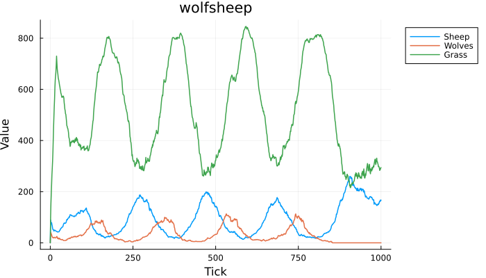
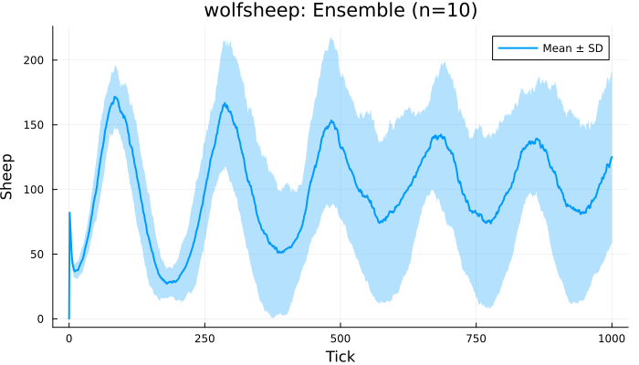
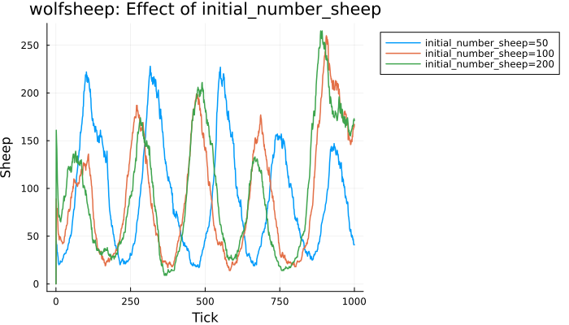

Wolf Sheep Predation
Overview
WHAT IS IT?
This model explores the stability of predator-prey ecosystems. Such a system is called unstable if it tends to result in extinction for one or more species involved. In contrast, a system is stable if it tends to maintain itself over time, despite fluctuations in population sizes.
HOW IT WORKS
There are two main variations to this model.
In the first variation, wolves and sheep wander randomly around the landscape, while the wolves look for sheep to prey on. Each step costs the wolves energy, and they must eat sheep in order to replenish their energy - when they run out of energy they die. To allow the population to continue, each wolf or sheep has a fixed probability of reproducing at each time step. This variation produces interesting population dynamics, but is ultimately unstable.
The second variation includes grass (green) in addition to wolves and sheep. The behavior of the wolves is identical to the first variation, however this time the sheep must eat grass in order to maintain their energy - when they run out of energy they die. Once grass is eaten it will only regrow after a fixed amount of time. This variation is more complex than the first, but it is generally stable.
The construction of this model is described in two papers by Wilensky & Reisman referenced below.
THINGS TO NOTICE
When grass is not included, watch as the sheep and wolf populations fluctuate. Notice that increases and decreases in the sizes of each population are related. In what way are they related? What eventually happens?
Once grass is added, notice the green line added to the population plot representing fluctuations in the amount of grass. How do the sizes of the three populations appear to relate now? What is the explanation for this?
Why do you suppose that some variations of the model might be stable while others are not?
THINGS TO TRY
Try adjusting the parameters under various settings. How sensitive is the stability of the model to the particular parameters?
Can you find any parameters that generate a stable ecosystem that includes only wolves and sheep?
Try setting GRASS? to TRUE, but setting INITIAL-NUMBER-WOLVES to 0. This gives a stable ecosystem with only sheep and grass. Why might this be stable while the variation with only sheep and wolves is not?
Notice that under stable settings, the populations tend to fluctuate at a predictable pace. Can you find any parameters that will speed this up or slow it down?
Try changing the reproduction rules – for example, what would happen if reproduction depended on energy rather than being determined by a fixed probability?
EXTENDING THE MODEL
There are a number ways to alter the model so that it will be stable with only wolves and sheep (no grass). Some will require new elements to be coded in or existing behaviors to be changed. Can you develop such a version?
NETLOGO FEATURES
Note the use of breeds to model two different kinds of “turtles”: wolves and sheep. Note the use of patches to model grass.
Note use of the ONE-OF agentset reporter to select a random sheep to be eaten by a wolf.
RELATED MODELS
Look at Rabbits Grass Weeds for another model of interacting populations with different rules.
CREDITS AND REFERENCES
Wilensky, U. & Reisman, K. (1999). Connected Science: Learning Biology through Constructing and Testing Computational Theories – an Embodied Modeling Approach. International Journal of Complex Systems, M. 234, pp. 1 - 12. (This model is a slightly extended version of the model described in the paper.)
Wilensky, U. & Reisman, K. (2006). Thinking like a Wolf, a Sheep or a Firefly: Learning Biology through Constructing and Testing Computational Theories – an Embodied Modeling Approach. Cognition & Instruction, 24(2), pp. 171-209. http://ccl.northwestern.edu/papers/wolfsheep.pdf
HOW TO CITE
If you mention this model in an academic publication, we ask that you include these citations for the model itself and for the NetLogo software: - Wilensky, U. (1997). NetLogo Wolf Sheep Predation model. http://ccl.northwestern.edu/netlogo/models/WolfSheepPredation. Center for Connected Learning and Computer-Based Modeling, Northwestern University, Evanston, IL. - Wilensky, U. (1999). NetLogo. http://ccl.northwestern.edu/netlogo/. Center for Connected Learning and Computer-Based Modeling, Northwestern University, Evanston, IL.
In other publications, please use: - Copyright 1997 Uri Wilensky. All rights reserved. See http://ccl.northwestern.edu/netlogo/models/WolfSheepPredation for terms of use.
Parameters
| Parameter | Type | Default | Description |
|---|---|---|---|
initial_number_sheep | Int | 100 | initial number sheep |
initial_number_wolves | Int | 50 | initial number wolves |
sheep_gain_from_food | Float64 | 4.0 | sheep gain from food |
wolf_gain_from_food | Float64 | 20.0 | wolf gain from food |
sheep_reproduce | Float64 | 4.0 | percent chance per tick |
wolf_reproduce | Float64 | 5.0 | percent chance per tick |
grass_regrowth_time | Int | 20 | matches NetLogo default |
grass_enabled | Bool | true | grass enabled |
grid_width | Int | 33 | matches NetLogo -16..16 |
grid_height | Int | 33 | grid height |
max_ticks | Int | 1000 | max ticks |
Source Code
The Julia code to run this model:
using ArkModelZoo
_, trajectory = run_wolfsheep()Time Series

Ensemble Runs
Ten replicates with different random seeds, showing mean ± standard deviation.

Parameter Sensitivity
Varying initial_number_sheep.

Appendix: Source Code
This model is implemented in the Ark.jl Entity-Component-System (ECS) framework. The code is split into five files, each with a distinct role:
- Parameters: a mutable struct holding all configurable values.
- Components: lightweight data types attached to individual entities (agents).
- Resources: world-level shared state accessible to all systems.
- Systems: functions that operate on entities each tick, defining model behavior.
- Model: wiring that assembles the world, registers resources and systems, and provides the run entry point.
Parameters (parameters.jl)
The parameter struct uses @kwdef so that every field has a default value and can be overridden by keyword. These defaults match the original NetLogo model’s slider settings.
Base.@kwdef mutable struct WolfSheepParams
initial_number_sheep::Int = 100
initial_number_wolves::Int = 50
sheep_gain_from_food::Float64 = 4.0
wolf_gain_from_food::Float64 = 20.0
sheep_reproduce::Float64 = 4.0 # percent chance per tick
wolf_reproduce::Float64 = 5.0 # percent chance per tick
grass_regrowth_time::Int = 20 # matches NetLogo default
grass_enabled::Bool = true
grid_width::Int = 33 # matches NetLogo -16..16
grid_height::Int = 33
max_ticks::Int = 1000
seed::Int = 42
endComponents (components.jl)
Components are lightweight data types attached to individual entities (agents). Mutable structs hold per-entity state, while empty tag structs act as markers for the ECS query system to efficiently filter entities.
# Continuous position on the grid
mutable struct WSPosition
x::Float64
y::Float64
end
WSPosition() = WSPosition(0.0, 0.0)
# Energy level (wolves and sheep both have energy)
mutable struct Energy
energy::Float64
end
Energy() = Energy(0.0)
# Persistent heading (degrees, 0=north, clockwise)
mutable struct WSHeading
angle::Float64
end
WSHeading() = WSHeading(0.0)
# Tag components for breed dispatch
struct Wolf end
struct Sheep endResources (resources.jl)
Resources are world-level singletons shared across all systems, used for global state and aggregate statistics.
# Grid of grass state: countdown[x,y] <= 0 means green (alive), > 0 means brown (regrowing)
mutable struct GrassGrid
width::Int
height::Int
countdown::Matrix{Int}
end
function GrassGrid(width::Int, height::Int)
GrassGrid(width, height, zeros(Int, width, height))
end
mutable struct WSPopulationStats
sheep_count::Int
wolf_count::Int
grass_count::Int
end
WSPopulationStats() = WSPopulationStats(0, 0, 0)Systems (systems.jl)
Systems contain the model logic and execute in a defined order each tick. Each system struct implements either initialize! (run once at setup) or update! (run every tick).
# Wolf-Sheep Predation systems
# Matches NetLogo execution order:
# ask sheep [ move; energy-=1; eat-grass; maybe-reproduce 4; if energy<=0 die ]
# ask wolves [ move; energy-=1; eat-sheep; maybe-reproduce 5; if energy<=0 die ]
# ask patches [ grow-grass ]
# update-counts
# --- Initialization ---
struct InitWolfSheepSystem <: System end
function initialize!(::InitWolfSheepSystem, world::World)
params = get_resource(world, WolfSheepParams)
rng = get_resource(world, RNGResource).rng
grass_grid = get_resource(world, GrassGrid)
w, h = grass_grid.width, grass_grid.height
# Initialize grass: countdown = random 0..(regrowth_time-1)
if params.grass_enabled
for x in 1:w, y in 1:h
grass_grid.countdown[x, y] = rand(rng, 0:params.grass_regrowth_time-1)
end
end
# Create sheep — energy = random 0..9, heading = random integer 0..359
for _ in 1:params.initial_number_sheep
x = rand(rng) * w
y = rand(rng) * h
e = Float64(rand(rng, 0:9))
new_entity!(world, (WSPosition(x, y), Energy(e), WSHeading(Float64(rand(rng, 0:359))), Sheep()))
end
# Create wolves — energy = random 0..9, heading = random integer 0..359
for _ in 1:params.initial_number_wolves
x = rand(rng) * w
y = rand(rng) * h
e = Float64(rand(rng, 0:9))
new_entity!(world, (WSPosition(x, y), Energy(e), WSHeading(Float64(rand(rng, 0:359))), Wolf()))
end
return nothing
end
# --- Shared movement helper ---
# NetLogo: rt random 50 - 25; fd 1 — persistent heading, ±25 degree turn, forward 1
function _ws_move!(rng, pos::WSPosition, heading::WSHeading, w::Int, h::Int)
heading.angle += Float64(rand(rng, 0:49) - 25)
θ = deg2rad(heading.angle)
pos.x = mod(pos.x + sin(θ), Float64(w))
pos.y = mod(pos.y + cos(θ), Float64(h))
end
# --- Sheep Phase ---
# All sheep: move, energy-=1, eat-grass, maybe-reproduce, die-check
mutable struct SheepPhaseSystem <: System
new_sheep::Vector{Tuple{Float64, Float64, Float64, Float64}} # x, y, energy, heading
end
SheepPhaseSystem() = SheepPhaseSystem(Tuple{Float64,Float64,Float64,Float64}[])
function update!(system::SheepPhaseSystem, world::World)
params = get_resource(world, WolfSheepParams)
rng = get_resource(world, RNGResource).rng
grass_grid = get_resource(world, GrassGrid)
w, h = grass_grid.width, grass_grid.height
empty!(system.new_sheep)
to_remove = Entity[]
# NetLogo `ask` shuffles agentset each tick — randomize processing order
for (eids, positions, energies, headings) in Query(world, (WSPosition, Energy, WSHeading); with=(Sheep,))
indices = collect(eachindex(positions))
Random.shuffle!(rng, indices)
@inbounds for i in indices
# Move + lose energy
_ws_move!(rng, positions[i], headings[i], w, h)
energies[i].energy -= 1.0
# Eat grass
if params.grass_enabled
gx = clamp(floor(Int, positions[i].x) + 1, 1, w)
gy = clamp(floor(Int, positions[i].y) + 1, 1, h)
if grass_grid.countdown[gx, gy] <= 0
energies[i].energy += params.sheep_gain_from_food
grass_grid.countdown[gx, gy] = params.grass_regrowth_time
end
end
# Maybe reproduce
if rand(rng, 0:99) < round(Int, params.sheep_reproduce)
energies[i].energy /= 2.0
push!(system.new_sheep, (positions[i].x, positions[i].y,
energies[i].energy, headings[i].angle))
end
# Die check
if energies[i].energy <= 0.0
push!(to_remove, eids[i])
end
end
end
# Remove dead sheep
for e in to_remove
is_alive(world, e) && remove_entity!(world, e)
end
# Spawn offspring — NetLogo: hatch 1 [ rt random 360; fd 1 ] (integer turn)
for (x, y, e, h_angle) in system.new_sheep
new_heading = h_angle + Float64(rand(rng, 0:359))
θ = deg2rad(new_heading)
nx = mod(x + sin(θ), Float64(w))
ny = mod(y + cos(θ), Float64(h))
new_entity!(world, (WSPosition(nx, ny), Energy(e), WSHeading(new_heading), Sheep()))
end
return nothing
end
# --- Wolf Phase ---
# All wolves: move, energy-=1, eat-sheep, maybe-reproduce, die-check
mutable struct WolfPhaseSystem <: System
sheep_by_cell::Dict{Tuple{Int,Int}, Vector{Entity}}
new_wolves::Vector{Tuple{Float64, Float64, Float64, Float64}}
end
WolfPhaseSystem() = WolfPhaseSystem(
Dict{Tuple{Int,Int}, Vector{Entity}}(),
Tuple{Float64,Float64,Float64,Float64}[]
)
function update!(system::WolfPhaseSystem, world::World)
params = get_resource(world, WolfSheepParams)
rng = get_resource(world, RNGResource).rng
grass_grid = get_resource(world, GrassGrid)
w, h = grass_grid.width, grass_grid.height
empty!(system.new_wolves)
# Build sheep spatial index (after sheep phase, dead sheep already removed)
empty!(system.sheep_by_cell)
for (eids, positions) in Query(world, (WSPosition,); with=(Sheep,))
@inbounds for i in eachindex(positions)
gx = clamp(floor(Int, positions[i].x) + 1, 1, w)
gy = clamp(floor(Int, positions[i].y) + 1, 1, h)
key = (gx, gy)
if !haskey(system.sheep_by_cell, key)
system.sheep_by_cell[key] = Entity[]
end
push!(system.sheep_by_cell[key], eids[i])
end
end
to_remove_wolves = Entity[]
to_remove_sheep = Entity[]
for (eids, positions, energies, headings) in Query(world, (WSPosition, Energy, WSHeading); with=(Wolf,))
indices = collect(eachindex(positions))
Random.shuffle!(rng, indices)
@inbounds for i in indices
# Move + lose energy
_ws_move!(rng, positions[i], headings[i], w, h)
energies[i].energy -= 1.0
# Eat sheep
gx = clamp(floor(Int, positions[i].x) + 1, 1, w)
gy = clamp(floor(Int, positions[i].y) + 1, 1, h)
key = (gx, gy)
sheep_list = get(system.sheep_by_cell, key, nothing)
if sheep_list !== nothing && !isempty(sheep_list)
idx = rand(rng, 1:length(sheep_list))
prey = sheep_list[idx]
push!(to_remove_sheep, prey)
deleteat!(sheep_list, idx)
energies[i].energy += params.wolf_gain_from_food
end
# Maybe reproduce
if rand(rng, 0:99) < round(Int, params.wolf_reproduce)
energies[i].energy /= 2.0
push!(system.new_wolves, (positions[i].x, positions[i].y,
energies[i].energy, headings[i].angle))
end
# Die check
if energies[i].energy <= 0.0
push!(to_remove_wolves, eids[i])
end
end
end
# Remove eaten sheep and dead wolves
for e in to_remove_sheep
is_alive(world, e) && remove_entity!(world, e)
end
for e in to_remove_wolves
is_alive(world, e) && remove_entity!(world, e)
end
# Spawn wolf offspring — NetLogo: hatch 1 [ rt random 360; fd 1 ] (integer turn)
for (x, y, e, h_angle) in system.new_wolves
new_heading = h_angle + Float64(rand(rng, 0:359))
θ = deg2rad(new_heading)
nx = mod(x + sin(θ), Float64(w))
ny = mod(y + cos(θ), Float64(h))
new_entity!(world, (WSPosition(nx, ny), Energy(e), WSHeading(new_heading), Wolf()))
end
return nothing
end
# --- Grass Growth ---
struct GrassGrowthSystem <: System end
function update!(::GrassGrowthSystem, world::World)
params = get_resource(world, WolfSheepParams)
!params.grass_enabled && return nothing
grass_grid = get_resource(world, GrassGrid)
for x in 1:grass_grid.width, y in 1:grass_grid.height
if grass_grid.countdown[x, y] > 0
grass_grid.countdown[x, y] -= 1
end
end
return nothing
end
# --- Count Population ---
struct CountWSPopulationSystem <: System end
function update!(::CountWSPopulationSystem, world::World)
params = get_resource(world, WolfSheepParams)
stats = get_resource(world, WSPopulationStats)
sheep_count = 0
for (eids, _) in Query(world, (WSPosition,); with=(Sheep,))
sheep_count += length(eids)
end
wolf_count = 0
for (eids, _) in Query(world, (WSPosition,); with=(Wolf,))
wolf_count += length(eids)
end
grass_count = 0
if params.grass_enabled
grass_grid = get_resource(world, GrassGrid)
for x in 1:grass_grid.width, y in 1:grass_grid.height
if grass_grid.countdown[x, y] <= 0
grass_count += 1
end
end
end
stats.sheep_count = sheep_count
stats.wolf_count = wolf_count
stats.grass_count = grass_count
return nothing
end
# --- Termination ---
struct WSTerminationSystem <: System end
function update!(::WSTerminationSystem, world::World)
stats = get_resource(world, WSPopulationStats)
params = get_resource(world, WolfSheepParams)
tick = get_resource(world, Tick)
if stats.sheep_count == 0 && stats.wolf_count == 0
get_resource(world, Terminate).stop = true
elseif tick.tick + 1 >= params.max_ticks
get_resource(world, Terminate).stop = true
end
return nothing
endModel (model.jl)
The model file assembles all pieces: it creates the ECS World with the required component types, registers resources, builds the Scheduler with systems in execution order, and exposes the public run entry point. The observer pattern records the trajectory each tick.
function wolfsheep_world(; initial_capacity::Int = 4096)
return World(
WSPosition,
Energy,
WSHeading,
Wolf,
Sheep;
initial_capacity = initial_capacity,
allow_mutable = true,
)
end
function wolfsheep_systems()
return (
InitWolfSheepSystem(),
SheepPhaseSystem(),
WolfPhaseSystem(),
GrassGrowthSystem(),
CountWSPopulationSystem(),
WSTerminationSystem(),
)
end
function wolfsheep_model(params::WolfSheepParams = WolfSheepParams())
world = wolfsheep_world()
_add_standard_resources!(world, params)
add_resource!(world, GrassGrid(params.grid_width, params.grid_height))
add_resource!(world, WSPopulationStats())
scheduler = Scheduler(world, wolfsheep_systems())
initialize!(scheduler)
return scheduler
end
struct WolfSheepObserver end
function wolfsheep_headers(::WolfSheepObserver)
return ["Sheep", "Wolves", "Grass"]
end
function wolfsheep_values(::WolfSheepObserver, world::World)
stats = get_resource(world, WSPopulationStats)
return Float64[stats.sheep_count, stats.wolf_count, stats.grass_count]
end
function run_wolfsheep(; params::WolfSheepParams = WolfSheepParams(), observe::Bool = true)
return _run_model(wolfsheep_model, WolfSheepObserver(), wolfsheep_values; params, observe)
end